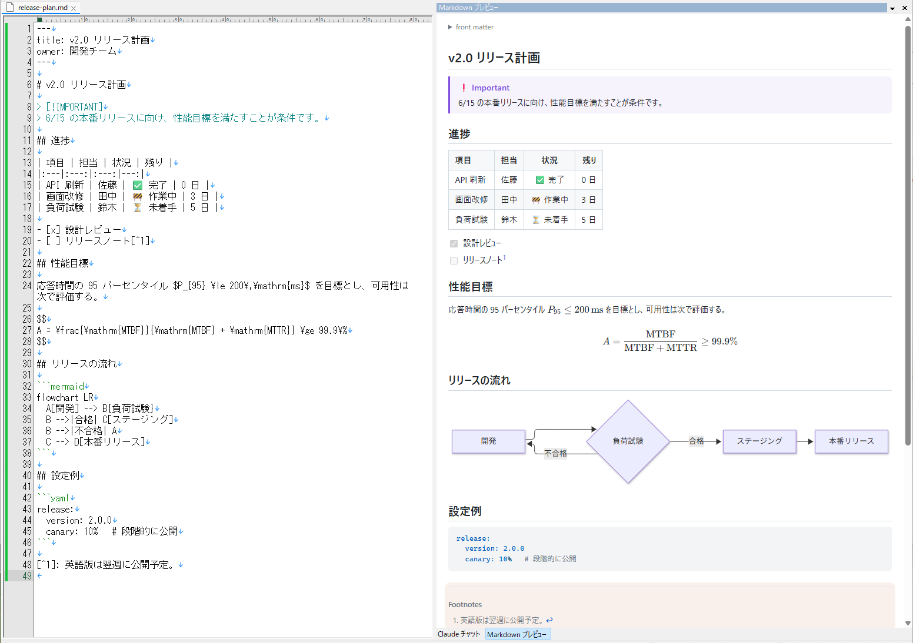

表も、数式も、Mermaid も。
書いたそばから、きれいに見える。
EmEditor のサイドパネルに、編集中の Markdown を GitHub に近い見た目でリアルタイム表示するプラグインです。
GFM の表やタスクリストはもちろん、数式（KaTeX）・図（Mermaid）・コードの色分け・脚注まで。

左のソースを編集すると、右のプレビューが 0.3 秒後に追従します。
対応する書き方
GitHub で見慣れた表現を、そのまま EmEditor の中で確認できます。
GFM の表・タスクリスト
左・中央・右寄せの混在した表、チェックボックス付きのタスクリスト、取り消し線、URL の自動リンク。
数式（KaTeX）
行内の $…$、独立した $$…$$、GitHub と同じ ```math と $`…`$。$5 のような金額は数式にしません。
図（Mermaid）
```mermaid でフローチャート・シーケンス図・ガントチャートなど。同じ図は描き直さないので、編集中も軽快です。
コードの色分け
言語を指定したコードブロックを highlight.js で色分け。GitHub 風の配色で、ダークテーマにも対応。
アラート・脚注・front matter
> [!NOTE] などの GitHub のアラート、[^1] の脚注、先頭の YAML front matter（折りたたみ表示）。
相対パスの画像・生 HTML
 は文書のフォルダから表示。<details> などの HTML もそのまま表示します（スクリプトは動きません）。
エディタと連動する
プレビューを「別の窓で見る」のではなく、エディタの隣で一緒に動きます。
リアルタイムに追従
入力が止まって 0.3 秒後に描き直し。スクロール位置は保ったままです。
スクロール連動
エディタをスクロールすると、プレビューも同じ場所へ。カーソルのある段落はプレビュー側で薄く強調されます。
ダブルクリックでジャンプ
プレビューの気になる箇所をダブルクリックすると、エディタのその行へ移動します。
タブに追従
タブを切り替えると、その文書のプレビューに。見出しへのリンクはプレビュー内で移動、相対リンクのファイルは EmEditor で開きます。
しくみ
表示には WebView2（Microsoft Edge の描画エンジン）を使い、Markdown を marked で HTML にしています。 数式は KaTeX、図は Mermaid、コードの色分けは highlight.js、脚注は marked-footnote。
- DLL 1 つで完結: ライブラリとフォントはすべて DLL に埋め込み済み。実行中にネットワークから何かを読み込むことはありません
- 重い Mermaid は必要なときだけ: 図が出てきたときに初めて読み込みます
- 明暗テーマ: Windows のアプリの設定（ライト / ダーク）に追従します
インストール
| 必要なもの | EmEditor（64-bit なら x64 版、32-bit なら x86 版の DLL）／ WebView2 Runtime（Windows 11 は標準で入っています） |
|---|---|
| 動作確認した環境 | Windows 11 / EmEditor 23.0.5（64-bit） |
- Releases から zip をダウンロードし、
markdown_preview.dllを好きなフォルダに置く（SHA-256 も掲載しています） - EmEditor の「プラグイン > プラグインの設定 > 追加」で DLL を選ぶ
- Markdown（
.mdなど）を開いて、「プラグイン > Markdown プレビュー」でパネルを開く
拡張子が Markdown でない文書も、パネルの「Markdown として表示」ボタンでプレビューできます。ソースからのビルド手順は README を参照してください。
安全性
スクリプトは動かない
プレビューは CSP で、プラグイン自身のスクリプト以外を一切実行しません。文書中の <script>、onclick、javascript: リンク、<iframe> は無効です。
見えるのは文書のフォルダだけ
相対パスの画像のために、ローカルで見せるのは開いている文書のフォルダだけです。
リンクはブラウザへ
リンクをクリックしても、プレビューの中では開かず、http(s) は既定のブラウザに渡します。